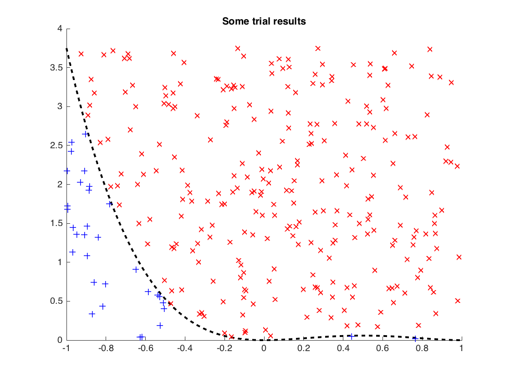
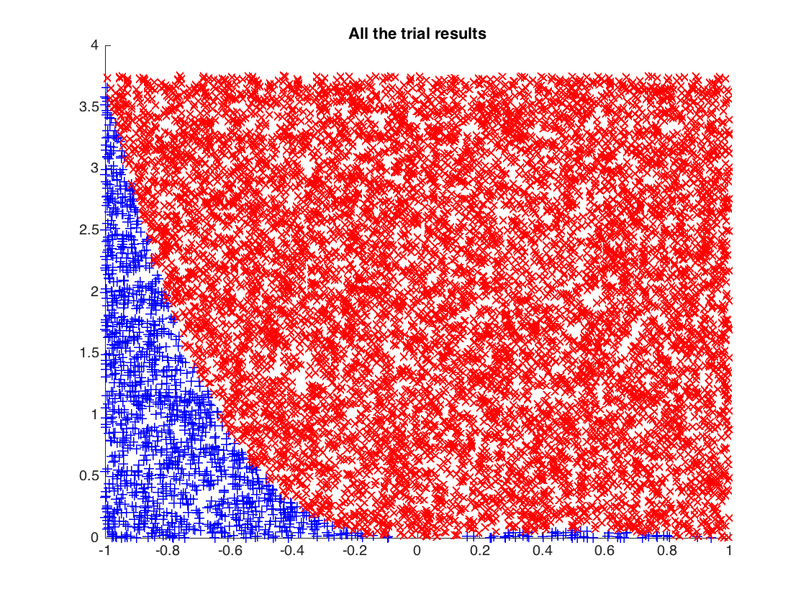
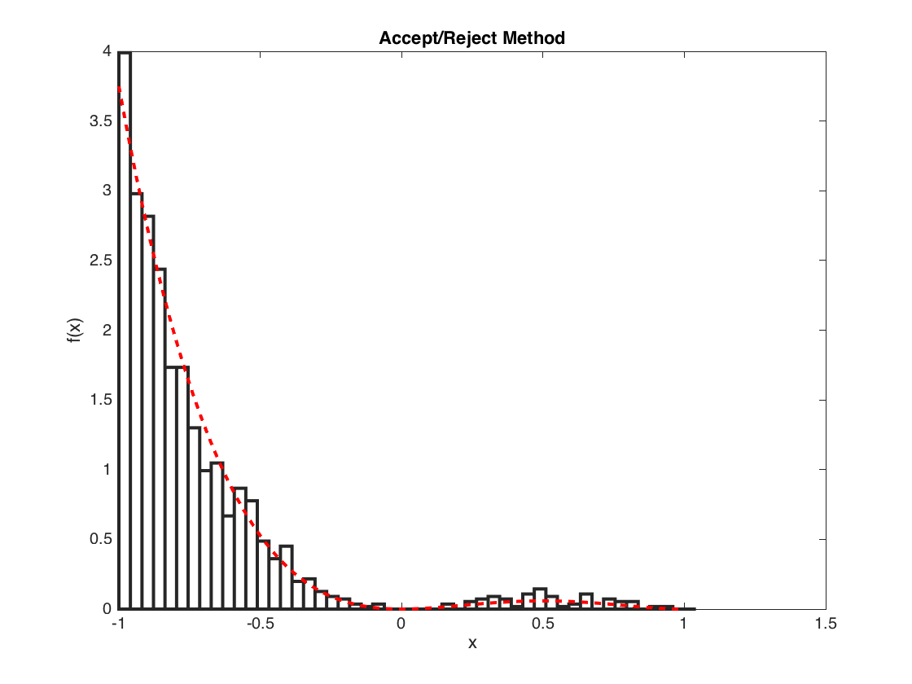

Contents
Accept / Reject Method DEMO
clear all; close all; % Settings. n = 1e4; % number of trials S = [-1, 1]; % support (domain of nonzero values) a = S(1); b = S(end); % interval endpoints g = @(x) 6 * x.^2 .* (1-x).^2; % density function B = @(x) 24 + (x-x); % bounding function (constant) % Scale set functions to appropriate size (optional). I = integral(g,a,b); f = @(x) (1/I)*g(x); M = @(x) (1/I)*B(x); % Initialize random variables for n trials. T = (b-a)*rand(1,n)+a; % x-value uniform distribution on S U = rand(1,n); % y-scale factor uniform distribution % Test criteria. ACCEPT = [ U .* M(T) <= f(T) ]; % logic array (0 if reject, 1 if accept) X = T(ACCEPT); % set X = T if accepted nACCEPT = sum(ACCEPT); % count how many we accepted (stats) pACCEPT = nACCEPT/n; % percentage accepted (stats)
Plotting
Plot the choosing process...
figure(1) hold on wait = 'Ready for trials...'; x = linspace(a,b,200); % domain for actual density plot(x,f(x),'k--','LineWidth',2); % plot actual density title(wait); for i = 1:20 pause(.1) p = plot(T(i),U(i)*M(T(i)),'ko'); title(['Trial #' num2str(i)]); pause(.1) if ACCEPT(i) == 0 set(p,'Color','r','Marker','x'); title('Reject...'); else set(p,'Color','b','Marker','+'); title('Accept!'); end end title('Let''s end this...'); pause(.1) run = 1; i = 20; while run i = i+1; pause(.001) p = plot(T(i),U(i)*M(T(i)),'ko'); % title(['Trial #' num2str(i)]); pause(.001) if ACCEPT(i) == 0 set(p,'Color','r','Marker','x'); else set(p,'Color','b','Marker','+'); end if i == min(300,n) run = 0; end end title('Much, much later...'); pause(.1) title('Some trial results'); % Plot all the trial results figure(2) hold on plot(T(ACCEPT),U(ACCEPT).*M(T(ACCEPT)),'b+'); plot(T(~ACCEPT),U(~ACCEPT).*M(T(~ACCEPT)),'rx'); title('Now... I''ll count the accepted.'); pause(.1) title('All the trial results'); % Plot the approximate and actual density. figure(3) m = 50; % number of bins EDGES = linspace(a,b,m); % define bins for histogram FREQ = histc(X,EDGES); % report frequency in each bin A = nACCEPT*(b-a)/(m-1); % 'area' of histogram approx = bar(EDGES,FREQ/A,'histc'); % plot approximate density hold on x = linspace(a,b,200); % domain for actual density plot(x,f(x),'r--','LineWidth',2); % plot actual density xlabel('x'); ylabel('f(x)'); title('Accept/Reject Method'); set(approx,'FaceColor',[1 1 1],'LineWidth',2);  